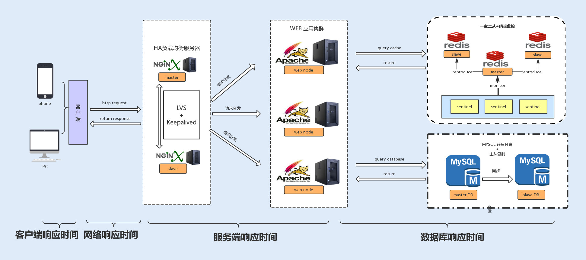

- 00 开篇词你为什么需要学习并发编程？.md
- 01 如何制定性能调优标准？.md
- 02 如何制定性能调优策略？.md
- 03 字符串性能优化不容小觑，百M内存轻松存储几十G数据.md
- 04 慎重使用正则表达式.md
- 05 ArrayList还是LinkedList？使用不当性能差千倍.md
- 06 Stream如何提高遍历集合效率？.md
- 07 深入浅出HashMap的设计与优化.md
- 08 网络通信优化之IO模型：如何解决高并发下IO瓶颈？.md
- 09 网络通信优化之序列化：避免使用Java序列化.md
- 10 网络通信优化之通信协议：如何优化RPC网络通信？.md
- 11 答疑课堂：深入了解NIO的优化实现原理.md
- 12 多线程之锁优化（上）：深入了解Synchronized同步锁的优化方法.md
- 13 多线程之锁优化（中）：深入了解Lock同步锁的优化方法.md
- 14 多线程之锁优化（下）：使用乐观锁优化并行操作.md
- 15 多线程调优（上）：哪些操作导致了上下文切换？.md
- 16 多线程调优（下）：如何优化多线程上下文切换？.md
- 17 并发容器的使用：识别不同场景下最优容器.md
- 18 如何设置线程池大小？.md
- 19 如何用协程来优化多线程业务？.md
- 20 磨刀不误砍柴工：欲知JVM调优先了解JVM内存模型.md
- 21 深入JVM即时编译器JIT，优化Java编译.md
- 22 如何优化垃圾回收机制？.md
- 23 如何优化JVM内存分配？.md
- 24 内存持续上升，我该如何排查问题？.md
- 25 答疑课堂：模块四热点问题解答.md
- 26 单例模式：如何创建单一对象优化系统性能？.md
- 27 原型模式与享元模式：提升系统性能的利器.md
- 28 如何使用设计模式优化并发编程？.md
- 29 生产者消费者模式：电商库存设计优化.md
- 30 装饰器模式：如何优化电商系统中复杂的商品价格策略？.md
- 31 答疑课堂：模块五思考题集锦.md
- 32 MySQL调优之SQL语句：如何写出高性能SQL语句？.md
- 33 MySQL调优之事务：高并发场景下的数据库事务调优.md
- 34 MySQL调优之索引：索引的失效与优化.md
- 35 记一次线上SQL死锁事故：如何避免死锁？.md
- 36 什么时候需要分表分库？.md
- 37 电商系统表设计优化案例分析.md
- 38 数据库参数设置优化，失之毫厘差之千里.md
- 39 答疑课堂：MySQL中InnoDB的知识点串讲.md
- 41 如何设计更优的分布式锁？.md
- 42 电商系统的分布式事务调优.md
- 43 如何使用缓存优化系统性能？.md
- 44 记一次双十一抢购性能瓶颈调优.md
- 加餐 什么是数据的强、弱一致性？.md
- 加餐 推荐几款常用的性能测试工具.md
- 答疑课堂：模块三热点问题解答.md
- 结束语 栉风沐雨，砥砺前行！.md
01 如何制定性能调优标准？
你好，我是刘超。
我有一个朋友，有一次他跟我说，他们公司的系统从来没有经过性能调优，功能测试完成后就上线了，线上也没有出现过什么性能问题呀，那为什么很多系统都要去做性能调优呢？
当时我就回答了他一句，如果你们公司做的是 12306 网站，不做系统性能优化就上线，试试看会是什么情况。
如果是你，你会怎么回答呢？今天，我们就从这个话题聊起，希望能跟你一起弄明白这几个问题：我们为什么要做性能调优？什么时候开始做？做性能调优是不是有标准可参考？
为什么要做性能调优？
一款线上产品如果没有经过性能测试，那它就好比是一颗定时炸弹，你不知道它什么时候会出现问题，你也不清楚它能承受的极限在哪儿。
有些性能问题是时间累积慢慢产生的，到了一定时间自然就爆炸了；而更多的性能问题是由访问量的波动导致的，例如，活动或者公司产品用户量上升；当然也有可能是一款产品上线后就半死不活，一直没有大访问量，所以还没有引发这颗定时炸弹。
现在假设你的系统要做一次活动，产品经理或者老板告诉你预计有几十万的用户访问量，询问系统能否承受得住这次活动的压力。如果你不清楚自己系统的性能情况，也只能战战兢兢地回答老板，有可能大概没问题吧。
所以，要不要做性能调优，这个问题其实很好回答。所有的系统在开发完之后，多多少少都会有性能问题，我们首先要做的就是想办法把问题暴露出来，例如进行压力测试、模拟可能的操作场景等等，再通过性能调优去解决这些问题。
比如，当你在用某一款 App 查询某一条信息时，需要等待十几秒钟；在抢购活动中，无法进入活动页面等等。你看，系统响应就是体现系统性能最直接的一个参考因素。
那如果系统在线上没有出现响应问题，我们是不是就不用去做性能优化了呢？再给你讲一个故事吧。
曾经我的前前东家系统研发部门来了一位大神，为什么叫他大神，因为在他来公司的一年时间里，他只做了一件事情，就是把服务器的数量缩减到了原来的一半，系统的性能指标，反而还提升了。
好的系统性能调优不仅仅可以提高系统的性能，还能为公司节省资源。这也是我们做性能调优的最直接的目的。
什么时候开始介入调优？
解决了为什么要做性能优化的问题，那么新的问题就来了：如果需要对系统做一次全面的性能监测和优化，我们从什么时候开始介入性能调优呢？是不是越早介入越好？
其实，在项目开发的初期，我们没有必要过于在意性能优化，这样反而会让我们疲于性能优化，不仅不会给系统性能带来提升，还会影响到开发进度，甚至获得相反的效果，给系统带来新的问题。
我们只需要在代码层面保证有效的编码，比如，减少磁盘 I/O 操作、降低竞争锁的使用以及使用高效的算法等等。遇到比较复杂的业务，我们可以充分利用设计模式来优化业务代码。例如，设计商品价格的时候，往往会有很多折扣活动、红包活动，我们可以用装饰模式去设计这个业务。
在系统编码完成之后，我们就可以对系统进行性能测试了。这时候，产品经理一般会提供线上预期数据，我们在提供的参考平台上进行压测，通过性能分析、统计工具来统计各项性能指标，看是否在预期范围之内。
在项目成功上线后，我们还需要根据线上的实际情况，依照日志监控以及性能统计日志，来观测系统性能问题，一旦发现问题，就要对日志进行分析并及时修复问题。
有哪些参考因素可以体现系统的性能？
上面我们讲到了在项目研发的各个阶段性能调优是如何介入的，其中多次讲到了性能指标，那么性能指标到底有哪些呢？
在我们了解性能指标之前，我们先来了解下哪些计算机资源会成为系统的性能瓶颈。
CPU：有的应用需要大量计算，他们会长时间、不间断地占用 CPU 资源，导致其他资源无法争夺到 CPU 而响应缓慢，从而带来系统性能问题。例如，代码递归导致的无限循环，正则表达式引起的回溯，JVM 频繁的 FULL GC，以及多线程编程造成的大量上下文切换等，这些都有可能导致 CPU 资源繁忙。
内存：Java 程序一般通过 JVM 对内存进行分配管理，主要是用 JVM 中的堆内存来存储 Java 创建的对象。系统堆内存的读写速度非常快，所以基本不存在读写性能瓶颈。但是由于内存成本要比磁盘高，相比磁盘，内存的存储空间又非常有限。所以当内存空间被占满，对象无法回收时，就会导致内存溢出、内存泄露等问题。
磁盘 I/O：磁盘相比内存来说，存储空间要大很多，但磁盘 I/O 读写的速度要比内存慢，虽然目前引入的 SSD 固态硬盘已经有所优化，但仍然无法与内存的读写速度相提并论。
网络：网络对于系统性能来说，也起着至关重要的作用。如果你购买过云服务，一定经历过，选择网络带宽大小这一环节。带宽过低的话，对于传输数据比较大，或者是并发量比较大的系统，网络就很容易成为性能瓶颈。
异常：Java 应用中，抛出异常需要构建异常栈，对异常进行捕获和处理，这个过程非常消耗系统性能。如果在高并发的情况下引发异常，持续地进行异常处理，那么系统的性能就会明显地受到影响。
数据库：大部分系统都会用到数据库，而数据库的操作往往是涉及到磁盘 I/O 的读写。大量的数据库读写操作，会导致磁盘 I/O 性能瓶颈，进而导致数据库操作的延迟性。对于有大量数据库读写操作的系统来说，数据库的性能优化是整个系统的核心。
锁竞争：在并发编程中，我们经常会需要多个线程，共享读写操作同一个资源，这个时候为了保持数据的原子性（即保证这个共享资源在一个线程写的时候，不被另一个线程修改），我们就会用到锁。锁的使用可能会带来上下文切换，从而给系统带来性能开销。JDK1.6 之后，Java 为了降低锁竞争带来的上下文切换，对 JVM 内部锁已经做了多次优化，例如，新增了偏向锁、自旋锁、轻量级锁、锁粗化、锁消除等。而如何合理地使用锁资源，优化锁资源，就需要你了解更多的操作系统知识、Java 多线程编程基础，积累项目经验，并结合实际场景去处理相关问题。
了解了上面这些基本内容，我们可以得到下面几个指标，来衡量一般系统的性能。
响应时间
响应时间是衡量系统性能的重要指标之一，响应时间越短，性能越好，一般一个接口的响应时间是在毫秒级。在系统中，我们可以把响应时间自下而上细分为以下几种：

- 数据库响应时间：数据库操作所消耗的时间，往往是整个请求链中最耗时的；
- 服务端响应时间：服务端包括 Nginx 分发的请求所消耗的时间以及服务端程序执行所消耗的时间；
- 网络响应时间：这是网络传输时，网络硬件需要对传输的请求进行解析等操作所消耗的时间；
- 客户端响应时间：对于普通的 Web、App 客户端来说，消耗时间是可以忽略不计的，但如果你的客户端嵌入了大量的逻辑处理，消耗的时间就有可能变长，从而成为系统的瓶颈。
吞吐量
在测试中，我们往往会比较注重系统接口的 TPS（每秒事务处理量），因为 TPS 体现了接口的性能，TPS 越大，性能越好。在系统中，我们也可以把吞吐量自下而上地分为两种：磁盘吞吐量和网络吞吐量。
我们先来看磁盘吞吐量，磁盘性能有两个关键衡量指标。
一种是 IOPS（Input/Output Per Second），即每秒的输入输出量（或读写次数），这种是指单位时间内系统能处理的 I/O 请求数量，I/O 请求通常为读或写数据操作请求，关注的是随机读写性能。适应于随机读写频繁的应用，如小文件存储（图片）、OLTP 数据库、邮件服务器。
另一种是数据吞吐量，这种是指单位时间内可以成功传输的数据量。对于大量顺序读写频繁的应用，传输大量连续数据，例如，电视台的视频编辑、视频点播 VOD（Video On Demand），数据吞吐量则是关键衡量指标。
接下来看网络吞吐量，这个是指网络传输时没有帧丢失的情况下，设备能够接受的最大数据速率。网络吞吐量不仅仅跟带宽有关系，还跟 CPU 的处理能力、网卡、防火墙、外部接口以及 I/O 等紧密关联。而吞吐量的大小主要由网卡的处理能力、内部程序算法以及带宽大小决定。
计算机资源分配使用率
通常由 CPU 占用率、内存使用率、磁盘 I/O、网络 I/O 来表示资源使用率。这几个参数好比一个木桶，如果其中任何一块木板出现短板，任何一项分配不合理，对整个系统性能的影响都是毁灭性的。
负载承受能力
当系统压力上升时，你可以观察，系统响应时间的上升曲线是否平缓。这项指标能直观地反馈给你，系统所能承受的负载压力极限。例如，当你对系统进行压测时，系统的响应时间会随着系统并发数的增加而延长，直到系统无法处理这么多请求，抛出大量错误时，就到了极限。
总结
通过今天的学习，我们知道性能调优可以使系统稳定，用户体验更佳，甚至在比较大的系统中，还能帮公司节约资源。
但是在项目的开始阶段，我们没有必要过早地介入性能优化，只需在编码的时候保证其优秀、高效，以及良好的程序设计。
在完成项目后，我们就可以进行系统测试了，我们可以将以下性能指标，作为性能调优的标准，响应时间、吞吐量、计算机资源分配使用率、负载承受能力。
回顾我自己的项目经验，有电商系统、支付系统以及游戏充值计费系统，用户级都是千万级别，且要承受各种大型抢购活动，所以我对系统的性能要求非常苛刻。除了通过观察以上指标来确定系统性能的好坏，还需要在更新迭代中，充分保障系统的稳定性。
这里，**给你延伸一个方法，**就是将迭代之前版本的系统性能指标作为参考标准，通过自动化性能测试，校验迭代发版之后的系统性能是否出现异常，这里就不仅仅是比较吞吐量、响应时间、负载能力等直接指标了，还需要比较系统资源的 CPU 占用率、内存使用率、磁盘 I/O、网络 I/O 等几项间接指标的变化。